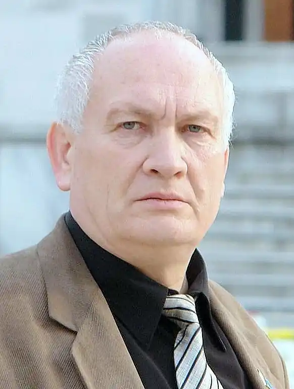
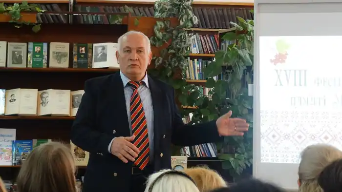
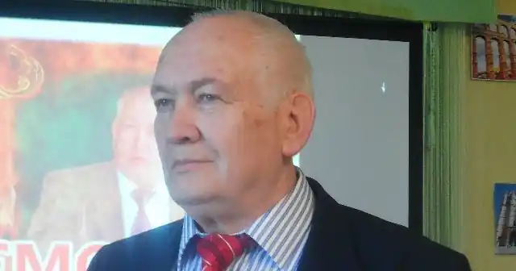
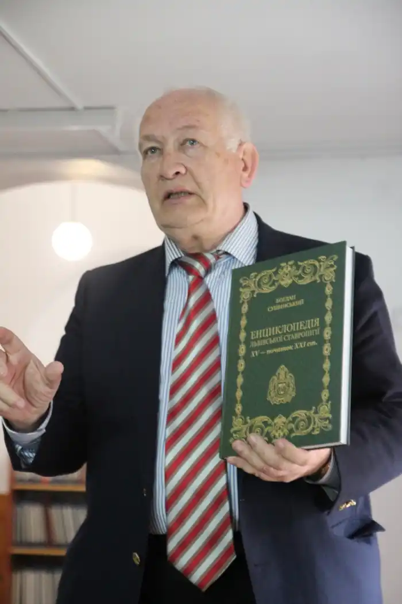
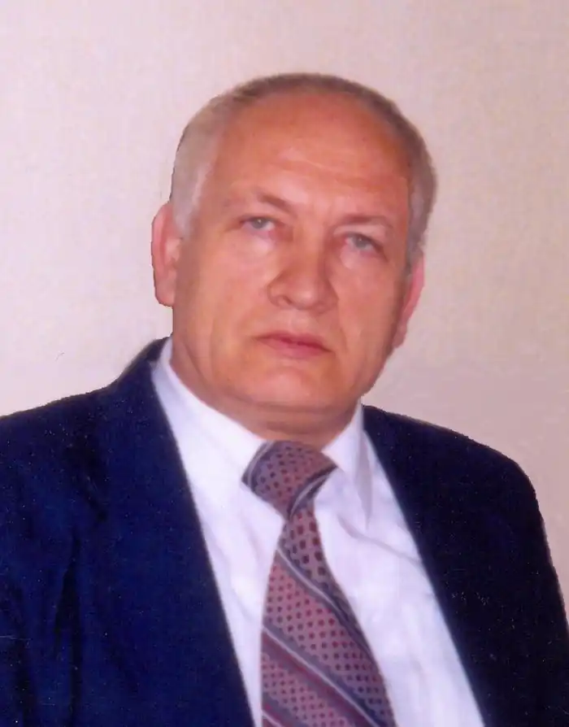
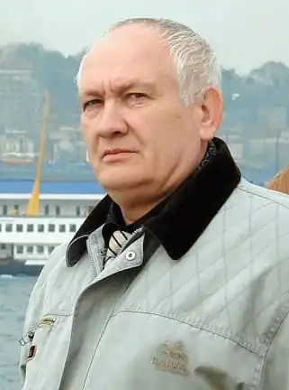

Сушинський Богдан Іванович (1946, Самбір, Дрогобицький район Львівської області) — український журналіст, письменник, член Спілки письменників України, НСЖУ. серед найбільш відомих романів автора — "Через міст над бистриною", "На тій землі за пагорбом", "Морава", "Голос ріки безіменної", "Останній з групи Беркута". Автор понад 100 книжок та понад тисячі публікацій в періодиці, численних збірок повістей та оповідань. Мова творів — російська та українська. Твори його перекладались п'ятнадцятьма мовами світу.
Народився Богдан Сушинський 10 квітня 1946 року в місті Самборі на Дрогобичині. В 1969 році він з відзнакою закінчив філологічний факультет Одеського держуніверситету ім. І. Мечникова. Під час навчання був іменним стипендіатом Міністерства вищої та середньої освіти України (стипендія ім. Лесі Українки). Після закінчення Одеського університету тривалий час перебував на журналістській роботі. Згодом став членом Національної спілки письменників України (НСПУ) й зрештою став головою правління Одеської організації Спілки письменників України та очолював її з 1990 по 2002 роки. Сушинський також є членом Національної Спілки журналістів (НСЖУ) та Національної Ради Конгресу української інтелігенції, віце-президентом української Асоціації письменників, президентом Аркадійського літературного клубу та головним редактором альманаху "Аркадійський клуб". Сушинський — академік міжнародної Академії наук, освіти, промисловості та мистецтв (при ЮНЕСКО, США).
Помітне місце в творчості Б. Сушинського посідають твори для дітей. Юним читачам добре відомі повісті "Танець степового коня", за яку його удостоєно премії імені М. Трублаїні, "З розвідки не повернувся", "За лінією життя", "Зоряний берег", "Візьми мене з собою, Магеллане…" Він — лауреат обласної премії ім. Е. Багрицького. Окремі твори Б. Сушинського перекладені п'ятнадцятьма мовами світу. Він — був членом Спілки письменників СРСР. Постійно виступає в пресі як письменник, публіцист та науковець. Участь українських козаків на чолі з І. Сірком у Тридцятирічної війні (1618–1648) на боці Франції відображено в його романах "На вістрі меча", "Французький похід", "Вогнища Фламандії" та "Шлях воїна". Його перу належить унікальна двотомна монографія "Козацькі вожді України. Історія України в образах її вождів та полководців XV–XIX століть", в якій вміщено есе про 205-0х гетьманів, кошових отаманів та полководців козацьких військ. За цю працю він першим удостоєний Міжнародної літературної премії Українського козацтва "Лицарське перо". Він також лауреат міжнародних премій ім. О.Дюма, ім. І. Мазепи, премій ім. І. Буніна, ім. М. Трублаїні, ім. Е. Багрицького, Аркадійської літературної премії. В 2002 р., за видатний внесок у розвиток вітчизняної і світової культури, Б. Сушинський відзначений Американським Біографічним інститутом Золотою Американською Медаллю Честі. Нині він — офіційний Радник цього Інституту. Б. Сушинський активно виступав у пресі на захист української мови та культури, за відродження українського козацтва. Він перший, або один із перших, виступив у республіканській пресі ("Літературна Україна", "Радянська Україна", журнал "Прапор" та ін.) з аргументованими, рішучими статтями проти будівництва згубної для українських степів Дунай-Дніпровської зрошувальної системи; Березівського хімічного комплексу; за врятування Дністра та на захист української популяції білих лелек. Його публікації мали значний громадський резонанс. Він був відзначений премією ім. Аверіна (журналу "Прапор") за публіцистику. На початку 2000 року побачила світ його книга "Лицарі приморського степу. Історія Чорноморського козацтва XVIII-ХХ століть". Він створив першу у світі повну "Історію Чорноморського козацтва" та є автором книжок "Українське Чорноморське Подунай-Гуляйпільське козацтво", "Історія Чорноморсько-Дністровського та Всеукраїнського реєстрового козацтв", підготував до друку унікальну працю "Всесвітня козацька енциклопедія". З його ініціативи побачило перше в Незалежній Україні видання вибраних творів класика українського гумору Степана Олійника, в якому він виступив як упорядник, редактор та автор аналітичного вступного слова. Він же став автором великої науково-дослідницької праці про життя і творчість цього видатного гумориста: "Степан Олійник: поет на тлі епохи". За благодійницьку діяльність на ниві культури, він відзначений Національною Спілкою письменників України "Медаллю Степана Олійника. За благодійність". Наприкінці 2002 року вийшов друком його політично-кримінальний роман "Хрещений батько Криму" — з життя сучасної України (премія І. Буніна). Цього ж року за психологічний роман "Три дні в Парижі з коханою жінкою" він був відзначений всеукраїнською премією "Гілка золотого каштану". Він також автор публіцистичних книжок "Генерал Власов — отверженный и проклятый", "штаб переворота — гостиница Москва". Широкого розголосу набула його публіцистична праця "Шлях України: нація і національна ідея", що на початку 2004 року з'явилася у львівському видавництві "Добра справа". Перу Богдана Сушинського належить збірка історико-філософських поезій "Чорний гонець" та низка прозових творів для дітей, зокрема, повість "Танець степового коня" (премія ім. М.Трублаїні за найкращий твір для дітей), "Острів забуття і покаяння", "Візьми мене з собою, "Магеллане", "Зоряний берег", "Ріка далеких мандрів"… В його упорядкуванні з'явилася антологія-довідник "Письменники Одещини на межі тисячоліть". З його ініціативи в Одесі споруджено пам'ятник отаману Чорноморського козацтва Антону Головатому (одному із засновників Чорноморського та Кубанського козацтв). Він задумав і здійснив в 1999 році перенесення землi з мiсця поховання гетьмана Мазепи з румунського міста Галаца — в Україну, до Батурина. Тоді ж, під час урочистостей в Батурині, за визначні заслуги в вивченні і пропаганді історії українського козацтва, було присвоєне звання полковника Українського козацтва та призначено наказним отаманом Українського козацтва з питань ідеології. Історія поховання гетьмана та перенесення землi з мiсця його поховання знайшли своє відображення в романі-есе "Гетьман Мазепа: повернення до Батурина". Б.Сушинський був ініціатором заснування в Батурині Алеї Гетьманів, на стелі якої висічено його слова: "У діяннях гетьманів — історія, слава і державна велич України". Йому також належить роман-есе "Гетьман Виговський: погляд з XXI століття" та історія (XVII–XXI ст.) монастиря Скит Манявський — "Слово про Скит Манявський", з перекладом літопису поч.. XVII ст. Богдан Сушинський активний учасник відродження українського козацтва. Свого часу був Головним отаманом Чорноморського Подунай-Гуляйпільського та Верховним отаманом Чорноморського козацтва. Він — засновник і перший Верховний отаман Чорноморсько-Дністровського козацтва, де обраний зараз довічним Почесним Верховним отаманом. Має козацько-військове звання "генерал козацтва". Богдан Сушинський є одним із засновників першого в Україні Міжнародного лицарського Ордену Архистратига Михаїла, членом Магістрату та Капітулу цього Ордену. Його перу належить перша у світі "Всесвітня історія лицарства", презентація якої відбулася в 2001 році, в Ароні (Італія) і за яку, та за внесок у пропаганду і розвиток європейського лицарства, він відзначений медаллю "Св. Амброзія", а також нагороджений Хрестом Дружби германського лицарського Ордену Святого Костянтина. В листопаді того ж року, під час Великої Прощі до Ватикану, здійсненої українськими віруючими, та представниками громадськості, у відповідь на візит Папи Римського в Україну, книгу Богдана Сушинського "Всесвітня історія лицарства" було офіційно вручено Папі Римському Іоанну Павлу II. Перу академіка Б. Сушинського належить також монографія "Історія українського лицарства", яка, за всеукраїнським рейтинговим опитуванням, увійшла до десятки найкращих історичних видань в Україні 2002 року. Б. Сушинський здійснив прозовий переклад "Велесової книги" і разом з ґрунтовним аналізом історії її з'явлення та автентичності опублікував в книзі: Сушинський Б. І. Велесова книга предків. "Велесова книга" волхва Хоруги у перекладі та літературній інтерпретації Богдана Сушинського". Богдан Іванович помер 24 грудня 2020 року.